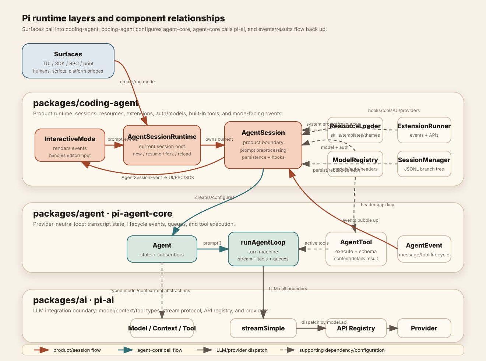

Layered, evented, and deliberately seam-heavy
Pi keeps the generic agent loop small and pushes product behavior into AgentSession, resource loaders, and mode-specific surfaces. That is why the same runtime can drive TUI, print/JSON, RPC, SDK, and future platform bridges.
The three runtime layers
The diagram below shows the concrete components inside each layer and the main call, configuration, and event relationships between them.

Foundation: pi-ai
Defines the provider-neutral language: Model, Context, Message, Tool, stream options, and assistant stream events. Providers register by model.api; product code mostly cares about model.provider for auth and display.
Loop: pi-agent-core
Owns the turn machine. It stores messages/tools/model state, calls a supplied stream function, emits lifecycle events, executes tools, supports abort/steer/follow-up, and remains UI-agnostic.
Product: pi-coding-agent
Builds the coding agent: config, resources, system prompt, built-in tools, extension runner, sessions, compaction, retry, auth/model registry, slash commands, and run modes.
Startup assembly
packages/coding-agent/src/main.tsparses CLI args and resolves app mode: interactive for a TTY, print/JSON for non-interactive or explicit flags, RPC for--mode rpc.- Startup creates cwd-bound services with
createAgentSessionServices(): settings manager, resource loader, auth storage, model registry, session manager, extension runner support. DefaultResourceLoader.reload()loads settings-backed and auto-discovered resources: extensions, skills, prompts, themes, context files, and system prompt files.createAgentSessionFromServices()createsAgentSession, which creates a low-levelAgent, installs hooks, refreshes tools, rebuilds system prompt, and starts session lifecycle.createAgentSessionRuntime()wraps the current session so modes can replace it on/new,/resume,/fork, or cwd changes without stale services.
AgentSession is the product boundary
The low-level Agent knows messages, tools, models, stream functions, and events. AgentSession adds everything that makes Pi Pi:
Prompt preprocessing
Runs extension input hooks, expands prompt templates and skill commands, handles slash/extension commands, blocks or queues input during active streaming, and creates user/custom prompt messages.
State and persistence
Subscribes to agent events, serializes processing, persists completed messages and custom messages to session JSONL, handles model/thinking changes, branch summaries, compaction, and retry.
Tools and prompt
Merges built-in tools, extension tools, and SDK custom tools into active AgentTools. Rebuilds the system prompt from tool snippets, project context, skills, and configured system prompt fragments.
Extensions
Converts agent events to extension lifecycle events before UI listeners see them, lets hooks alter context/messages/tool calls/results/provider payloads, and exposes session/UI/model APIs to extensions.
Runtime replacement
AgentSessionRuntime is easy to underestimate. It owns the replaceable current session and its cwd-bound services. Interactive mode stores a runtime host and uses getters for session, agent, sessionManager, and settingsManager. That prevents stale references when a user resumes/forks/clones/switches sessions.
AgentSessionRuntime should assume the session can be replaced. Register rebind/invalidate callbacks; do not capture old session objects forever.Stable seams vs volatile details
Stable seams
AgentEvent, AgentSessionEvent, ToolDefinition, ExtensionAPI, SessionEntry, ResourceLoader, ModelRegistry, and SDK factories.
Volatile details
Individual TUI components, provider payload shapes, exact slash-command UI routing, specific built-in theme values, and provider-specific message conversion.
Source landmarks
packages/coding-agent/src/main.ts— CLI mode selection and service/session creation.packages/coding-agent/src/core/sdk.ts— public one-call session factory.packages/coding-agent/src/core/agent-session-services.ts— cwd-bound services and extension flag validation.packages/coding-agent/src/core/agent-session-runtime.ts— replaceable session runtime.packages/coding-agent/src/core/agent-session.ts— product orchestration layer.packages/agent/src/agent.ts— stateful generic agent wrapper.packages/agent/src/agent-loop.ts— low-level loop and tool execution.